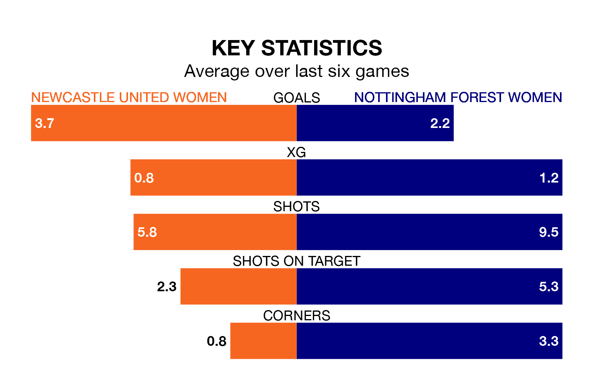

Two of Women's National League Premier Division North's top sides face each other in Sunday's early kick-off, when table-topping Newcastle United Women host third-placed Nottingham Forest Women.
Newcastle United have picked up nine wins and two draws from 11 games so far this season, and sit 10 points above the visitors going into the 2pm match.
Nottingham Forest, meanwhile, have won six and drawn one of 10, picking up 19 points.
With 34 goals in 11 games so far this season, Newcastle United are the league's highest scorers with 3.1 goals per game. And they are conceding fewer than average, letting in four goals at a rate of 0.4 per game.
Nottingham Forest are also above average scorers, with 2.9 goals per game, compared to a league average of 1.9. They have conceded 1.0 goal per game.
The hosts are in fantastic form in Women's National League Premier Division North, with five wins and a draw from their last six games.
With three wins and a draw over that period, the away team's form is much worse – they have taken 10 points from 18, compared to Newcastle United's 16.
Newcastle United's last match was on January 7, a 0-0 draw against Halifax Women.
Nottingham Forest drew 0-0 with West Brom WFC last time out, also on January 7.
Updated: 06:13 (UTC), 18/01/24